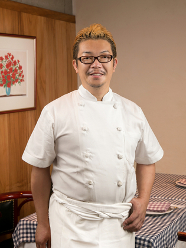

シェフのこだわり
「食べるって楽しいよね」に加え「おいしく食べてきれいに、そして健康に」をテーマに美味しいものは無理にいじらず、 シンプルに素材を生かし、切り方・火の入れ方・塩のあて方までなぜそうするのかを考え、 今一番理にかなった料理法でトラディショナル（伝統的な）料理を追求していきます。
Chef introduction シェフ紹介
無藤 哲弥 氏（ムトウ テツヤ）
専門ジャンル： フランス料理
テレビの料理人対決番組を見て、飲食の世界に興味を抱く
1974年、三重県生まれ。子供の頃からお菓子づくりが趣味だった。料理人対決番組も好きでよく見ていた。地元で就職した時にカフェを任され、1年半経った頃に「このままでいいのか」という迷いが生じ、辻学園調理・製菓専門学校へ。たまたま本屋で【ヴァンサン】の城悦男氏の本を手にし、フランス料理に魅せられる。城氏の元で3年修業後、虎ノ門の【ヴァンシュールヴァン】を経て、2007年【ビストロ ダルブル】のシェフに就任。

Recommended menu お勧めのメニュー
『牛ホホ肉の赤ワイン煮込み』
牛ホホ肉を、たっぷりの香味野菜と赤ワインでトロットロになるまでじっくりと煮込み、ワインとブランデーで仕上げております。シャープで、コクとキレがある奥深い味わいをお楽しみいただけます。
南西部の郷土料理『カスレ』
豚肉、生ベーコン、鴨コンフィ、ソーセージと国産白インゲン豆
1974年の創業当初から根強い人気のメニュー『カスレ』では、豚肉のいろいろな部位の旨味を味わっていただけます。
味付けはシンプルに塩・胡椒のみ。ホクホクした豆の甘さが絶品です。